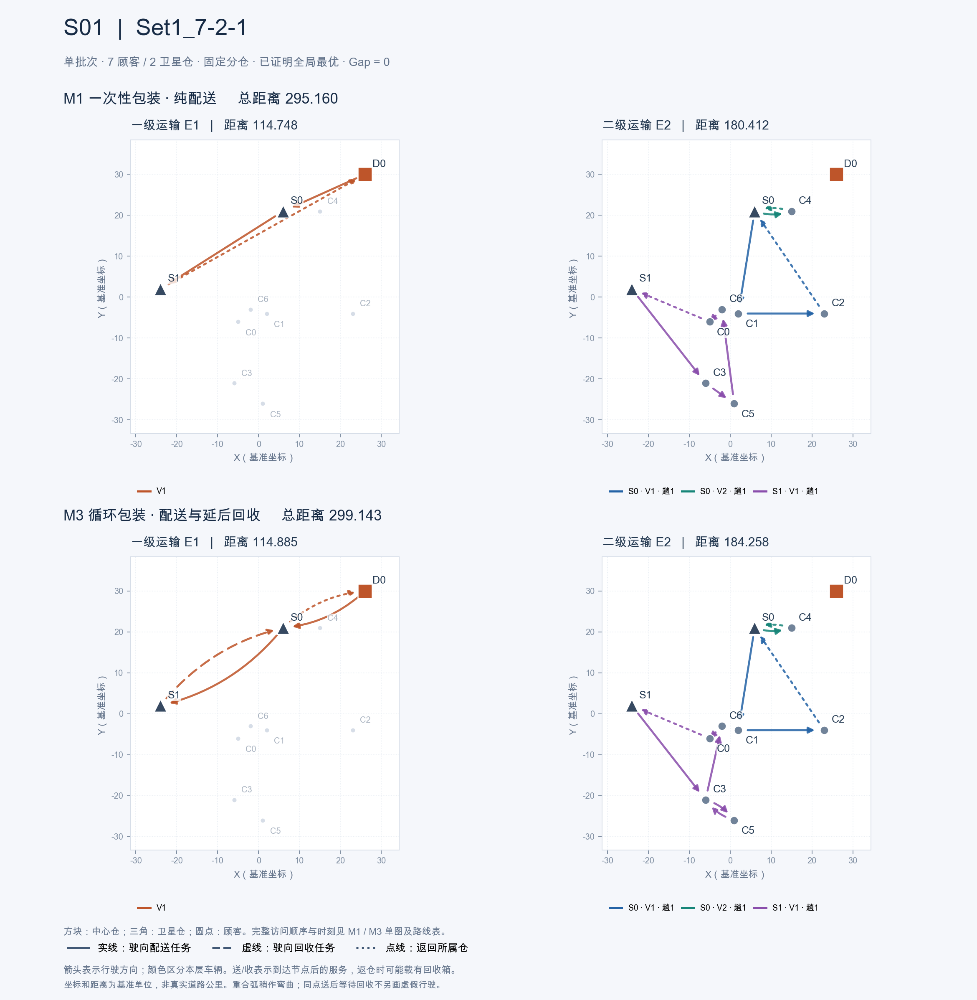
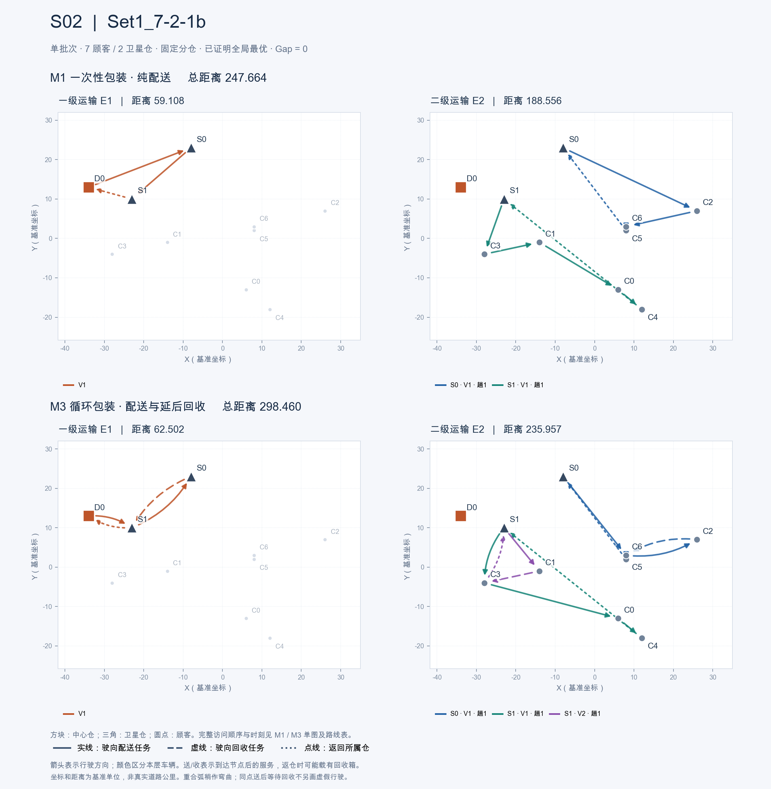
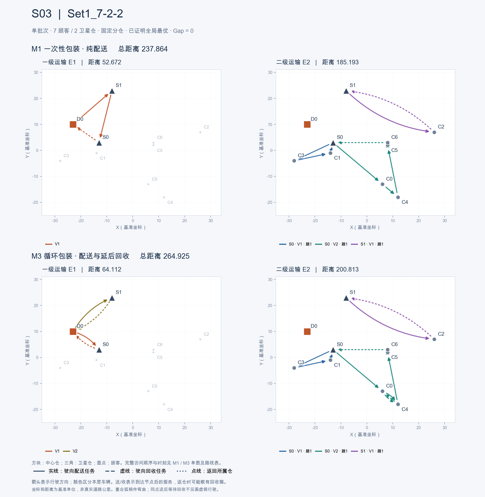
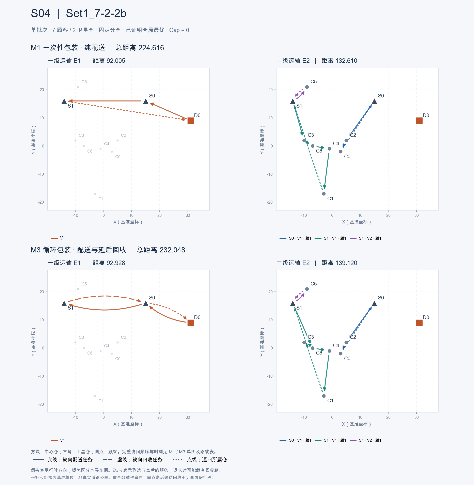
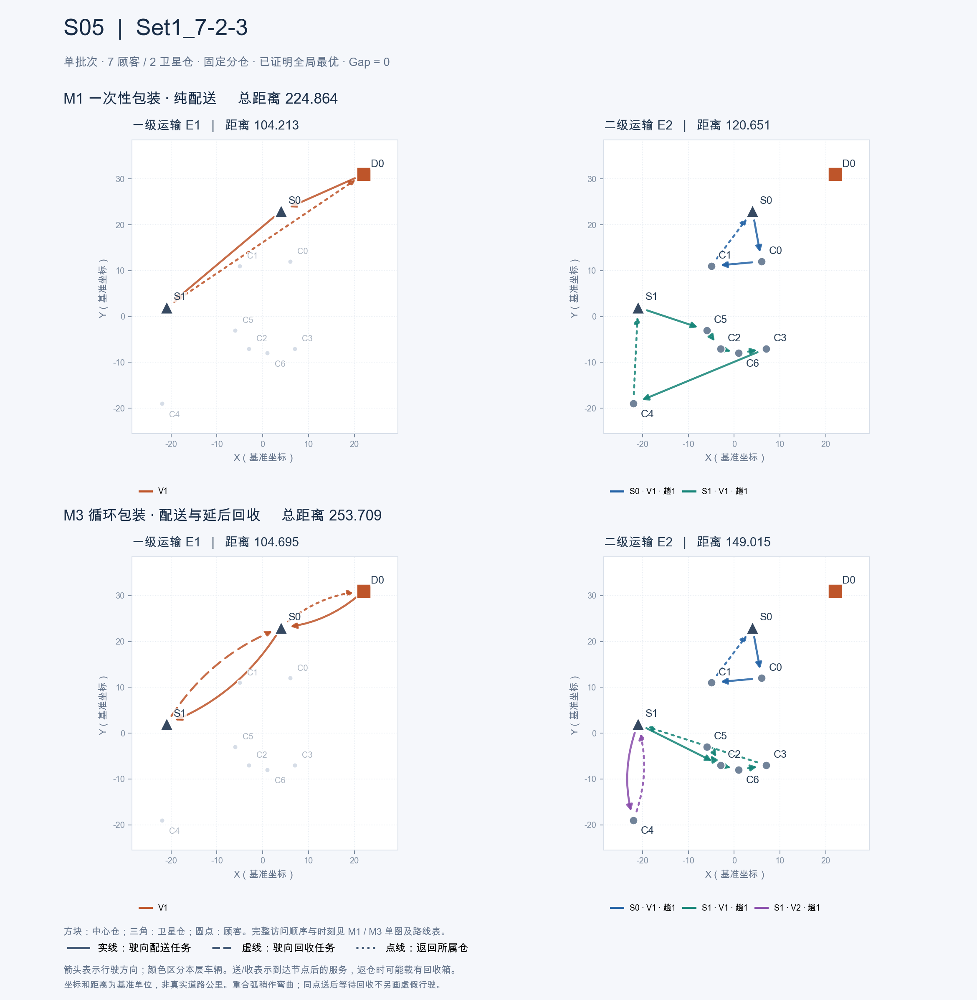

5 个正式七顾客实例 · 固定分仓 · 单批次 B=1 · 10/10 全局最优，独立审计及两周期复放通过。
按箭头读取方向，结合图下的送/收顺序。坐标为基准单位，并非真实道路地图；返仓可能载有回收箱。 每项预算上限 120 秒。图中时间为分钟，同点送后收的等待保留在时间表中。 当前 Zhou 派生输入的周期为 2,220 分钟（37 小时），单批次不等于单日。
M1：295.160365 M3：299.143031 均已证明最优，Gap = 0
下载对照 PNG · 矢量 SVG · M1 单图 · M3 单图

M1：247.664216 M3：298.459566 均已证明最优，Gap = 0

M1：237.864378 M3：264.925338 均已证明最优，Gap = 0

M1：224.615772 M3：232.048412 均已证明最优，Gap = 0

M1：224.864044 M3：253.709397 均已证明最优，Gap = 0
